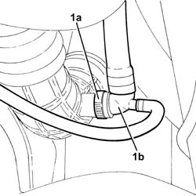
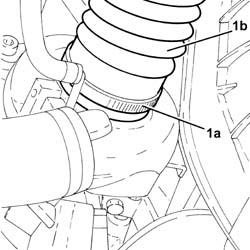
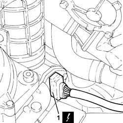
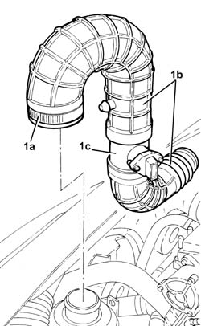
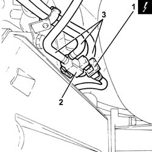

1064B42 solenoid controlling turbocharger vane position actuator r r
- Path
- Procedures > 10 ENGINE > 1064 ENGINE SUPERCHARGING SYSTEM > 1064B control/safety devices > 1064B42 solenoid controlling turbocharger vane position actuator r r
- Kind
- repair procedure (removal / refitting; the operation number is the code)
- Applies to
- all engines; all production periods
- Interactive page
- https://sloeber94.github.io/elrnDB-fDbl/en/#/2584505
Applies to: all engines; all production periods
 Removing
Removing
 Refitting
RefittingPosition the vehicle on the ramp.
Proceed with the removal 7055B54 under-engine guard - r r .
1. Loosen the band (1a) and disconnect the T connector (1b) from the turbocharger air intake hose.

Applies to: all engines; all production periods
1. Loosen the band (1a) and disconnect the air intake sleeve to the turbocharger (1b), turbocharger side.

Applies to: all engines; all production periods
1. Disconnect the electrical connection from the air flow meter.
 | Name | Connector |
|---|---|---|
1 | Air flow meter | K41 |

Applies to: all engines; all production periods
1. Loosen collar (1a) and remove the air intake sleeve to the turbocharger (1b) complete with flow meter (1b).

Applies to: all engines; all production periods
1. Disconnect the electrical connection from the turbocharger vane actuator solenoid.
| Name | Connector |
|---|---|---|
1 | Data not available yet |
2. Release the turbocharger vane position actuator control solenoid from the protection on the gearbox.
3. Loosen the collars, disconnect the pipes and remove the solenoid valve for the turbocharger vanes actuator.

Applies to: all engines; all production periods
Refitting
RemovingConnect the vacuum intake pipe to the solenoid valve for the turbocharger vanes actuator and tighten the collar.
Connect the hose controlling the variable geometry turbocharger actuator to the turbocharger vane position actuator control solenoid and tighten the band.
Connect the pipe and tighten the band.
Secure the turbocharger vane position actuator control solenoid to the protection on the gearbox.
Connect the electrical connection to the turbocharger vane actuator solenoid.
Refit the air intake hoses to the turbocharger complete with air flow meter and tighten the relevant bands.
Connect the electrical connection to the air flow meter.
Connect the air intake sleeve to the turbocharger, turbocharger side, and tighten the band.
Connect the T connector to the turbocharger air intake hose and tighten the band.
Proceed with the refitting 7055B54 under-engine guard - r r .
Remove the car from the ramp.